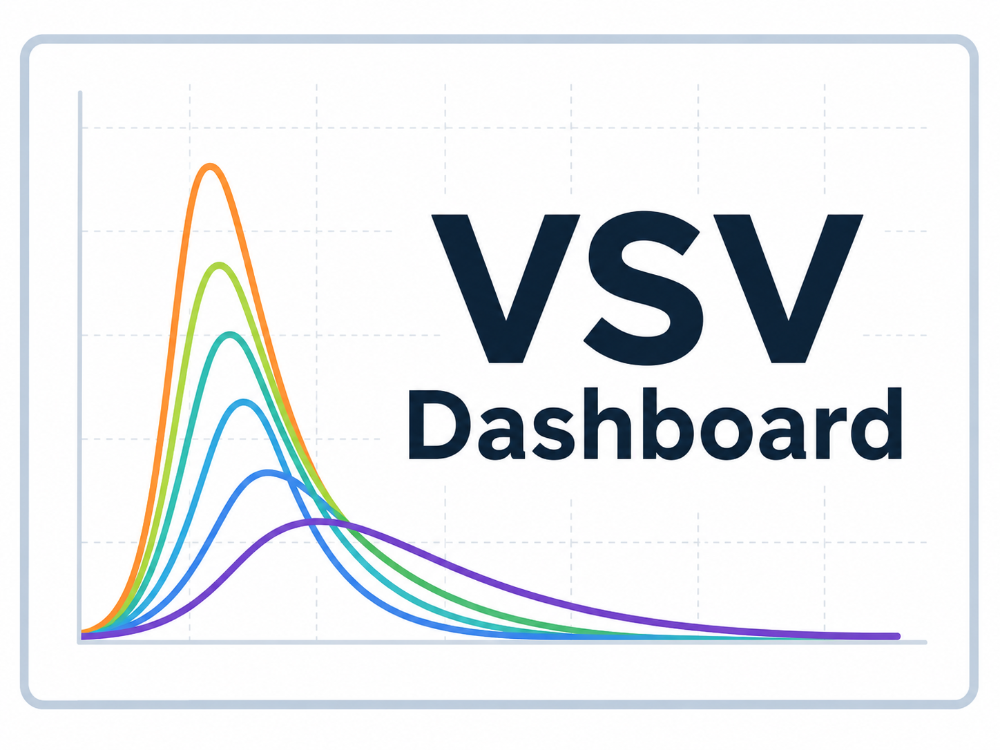
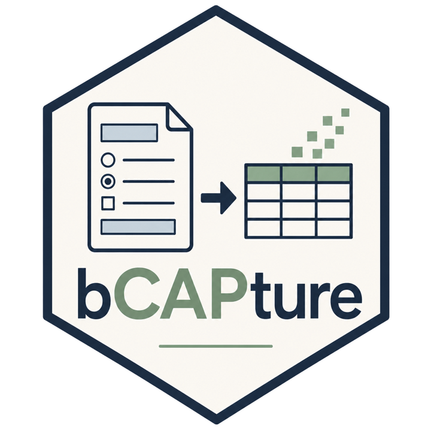
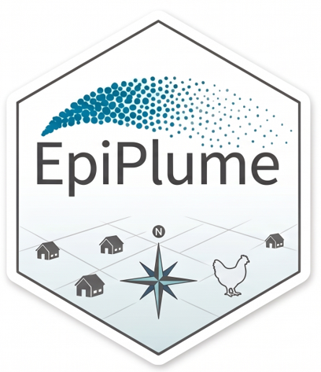
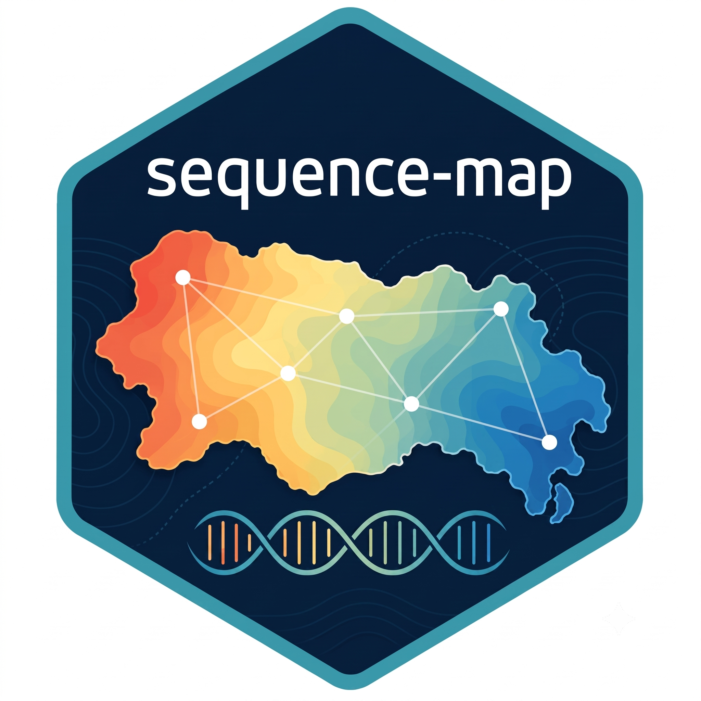
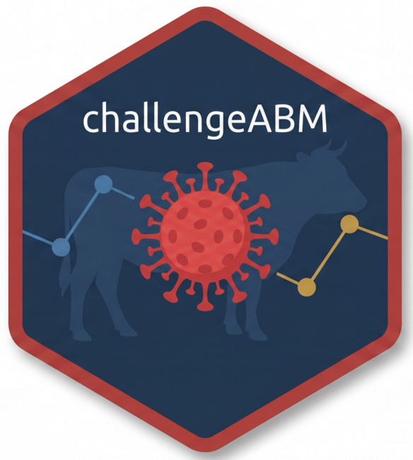
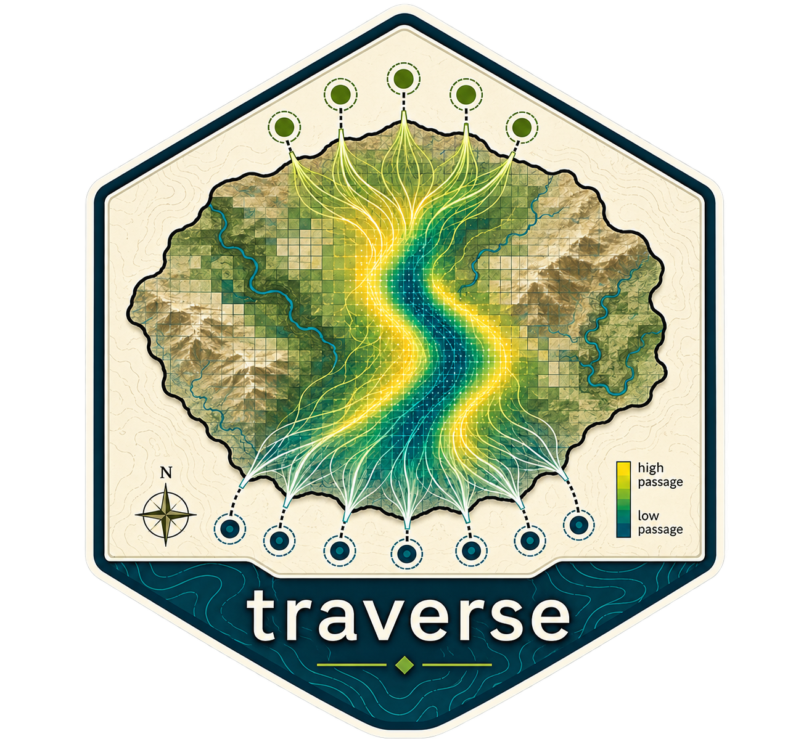
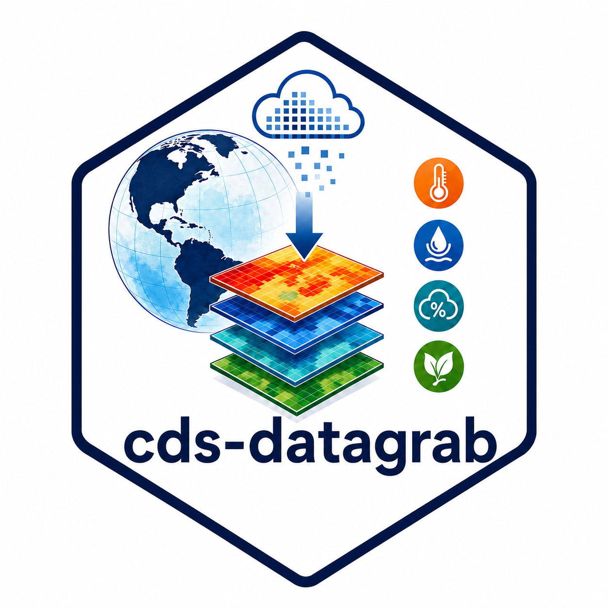

Interactive application
VSV Dashboard
An interactive dashboard for exploring vesicular stomatitis transmission dynamics and related epidemic behavior.
COMPUTATIONAL PRODUCTS
GeoEpi develops reusable software, computational workflows, simulation frameworks, data pipelines, and interactive applications in support of animal-disease research. Some resources are general-purpose analytical tools, while others were developed for specific scientific problems but may be useful or adaptable beyond their original projects.

An interactive dashboard for exploring vesicular stomatitis transmission dynamics and related epidemic behavior.

Tools for extracting, organizing, validating, summarizing, and viewing data from Biosecurity Compliance Audit Program (bCAP) forms.

Exploratory models of pathogen movement via aerosol, particle, and airborne dispersion, with workflow demonstrations for plume and trajectory analysis.

Converts aligned viral sequences and sampling coordinates into PCA, DAPC, and location-level summaries, with optional spatial prediction of ordination-axis scores.

An agent-based modeling framework simulating within-host dynamics, room-to-room animal experiments, within-herd host transmission, and between-farm spread.

Estimates randomized passage and connectivity across gridded landscapes and returns passage intensity summarizing many possible routes rather than a single least-cost path.

A reproducible R-package workflow for retrieving environmental data from the Copernicus Climate Data Store, aligning source data, writing daily GeoTIFFs, and aggregating complete ISO weeks.